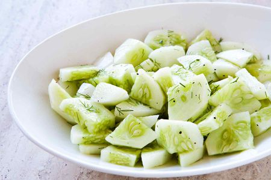

Back to recipe list

Cucumber Salad
Ingredients
1 sliced cucumber
3 tbsp sugar
1/4 cup fresh lemon juice
8 oz. sour cream
1 tspn salt
1/2 tspn dill
Method
1)Dissolve sugar in lemon juice. Add sour cream, salt and dill. Mix with the cucumbers.